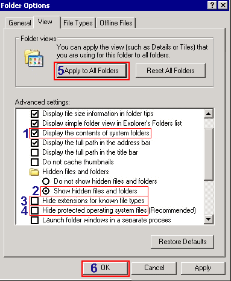

Using Desktop Sharing Between Console PC and AU
This procedure describes how to connect from the console PC to the instrument using desktop sharing on DxI systems running Windows XP and Windows 8 operating system.
For DxI systems running Windows XP and Windows 8, remote desktop connects to the instrument computer (AU) allowing remote control of the instrument and applications.
-
Open a connection between the console PC and the AU.
For Windows XP:
-
Press the
[Windows] key, and then select
Start
> Programs > Administrative Tools > Remote Desktop Connection to AU PC to start desktop sharing.
The remote desktop connects to the instrument computer and allows remote control of the instrument and applications. When connected, the Remote Desktop window displays the Windows XP desktop of the instrument.
-
To navigate the AU desktop:
- Use the scroll bars on the right and bottom of the window.
- Move down the scroll bar on the right to see the AU desktop toolbar,
- The PC toolbar is at the bottom of the screen.
-
To switch between the console PC display and the AU display:
- To return to the console PC display, use the minimize button at the top of the AUSETUPPC screen.
- To restore the AU Windows screen, select AUSETUPPC Remote Desktop Connection in the toolbar at the bottom of the console PC display.
For Windows 8:
-
Press the
Windows key, type
remote, and open the Remote Desktop Connection program.
The remote desktop connects to the instrument computer and allows remote control of the instrument and applications. When connected, the Remote Desktop window displays the Windows 8 desktop of the instrument.
- Type in 192.168.2.4 into the Computer field and select Connect.
- Enter user for User Name and tech for the password if prompted.
-
If prompted at the RDS warning screen, check the box for "Don't ask me again for connections to this computer" and select
Yes.
Note: For Windows 8, the default console IP address is 192.168.2.3 and the AU IP address is 192.168.2.4. Neither IP address changes during the software load process.
-
To switch between the console PC display and the AU display:
- To return to the console PC display, use the minimize button at the top of the AU Desktop screen.
- To restore the AU Desktop screen, press the Windows key, type remote, and open the Remote Desktop Connection program.
-
Press the
[Windows] key, and then select
Start
> Programs > Administrative Tools > Remote Desktop Connection to AU PC to start desktop sharing.
-
If the AU is being accessed for the first time or if you have problems finding a file or folder, change the folder options.
For Windows XP:

- Select Start > All Programs > Windows Explorer.
- Navigate to Tools > Folder Options, and then select the View tab.
-
Verify that:
- Hide extensions for know file types is checked.
- Display the contents of the system folder is checked.
- Show hidden files and folders is checked.
- Hide protected operating system files is unchecked.
-
Select
Apply to All Folders > OK.
For Windows 8:
- Press Windows key and select File Explorer.
- Navigate to View > Options, and then select the Change folder and search options tab.
- On Folder Options box, clik on View.
-
Verify that:
- Hide extensions for know file types is checked.
- Display file icon on thumbnails is checked.
- Display the file size information in folder tips is checked.
- Show hidden files, folders, and drives is checked.
- Hide protected operating system files (Recommended) is unchecked.
Note: Keep the rest of the options as they are.
- Select Apply to All Folders > OK.
-
If necessary, restart the AU computer.
For Windows XP:
- From the AU Desktop, select Start > Run and type CMD and click OK.
- Type shutdown.exe /r /t 00 and hit Enter to end the remote desktop connection and initialize the AU.
For Windows 8:
- Click on the small computer icon on the upper left corner, select Remote Commands > Start.
- Open the Command Prompt program or type Command Prompt and open the program.
- Type shutdown.exe /r /t 00 and hit Enter to end the remote desktop connection and initialize the AU.
-
Close the desktop sharing connection.
For Windows XP:
- From the AU Desktop, select Start > Disconnect or select the X in the upper right corner.
- Select OK at the Disconnect Windows Session pop-up.
For Windows 8:
- From the AU Desktop, right click on Remote Desktop Connection icon on the upper left corner or on the task bar > Close or select the X in the upper right corner.
- Select OK at the Your remote session will be disconnected pop-up.